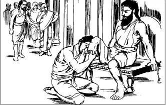
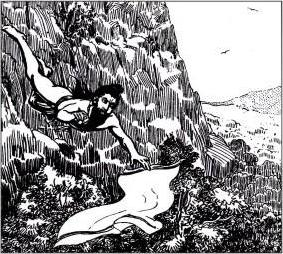
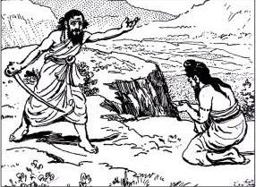
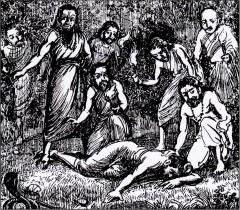
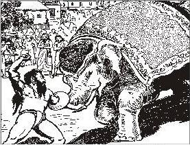
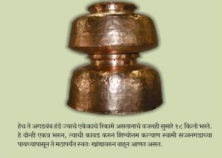

नाशिक जवळील भोगुर गावचे कुलकर्णी कृष्णाजीपंत यांचा विवाह झाला व त्यांना अपत्य प्राप्ती झाली.
परंतु दुर्दैवाने त्यांची पत्नी व ते अपत्य थोड्याच कालावधी मध्ये मृत्यू पावले.
ऐन तारुण्यात झालेल्या या आघातामुळे कृष्णाजीपंत गावातील सर्व निरवानिरव करुन तीर्थाटनासाठी बाहेर पडले.
अनेक तीर्थक्षेत्रांना भेटी देत ते श्री महालक्ष्मीच्या दर्शनासाठी कोल्हापूरला आले.
कोल्हापूर मध्ये बरवाजीपंत कुलकर्णी नावचे एक गृहस्थ होते त्यांच्या बहिणीचा विवाह व्हावयाचा होता. ते त्या
चिंते मध्ये होते.
पूर्वसंचितानुसार कृष्णजीपंत आणि बरवाजीपंत यांची भेट झाली.
बरवाजीपंतांची विनंती मान्य करुन कृष्णाजीपंतांनी त्यांच्या बहिणीशी-रखुमाबाईंशी विवाह करण्यास मान्यता दिली.
तसेच काही काळानंतर पुन्हा तीर्थयात्रा करण्याचा मनोदय ही सांगितला. यानुसार बरवाजीपंतची भगिनी रखुमबाई आणि
कृष्णजीपंत यांचा विवाह झाला.
श्री महालक्ष्मीच्या कृपेने झालेल्या या विवाहसोह्ळ्यात पुढील इतिहासाचीन बीजे होती. कोल्हापूरच्या
अंबाबाईच्या
कृपेने या दाम्पत्याला पहिला मुलगा झाला.
त्याचे नाव अंबाजी असे ठेवण्यात आले. अंबाजीचे जन्मवर्ष इ. स. १६३६ असावे. अंबाजी नंतर झालेल्या दुसर्या
मुलाचे
नाव दत्तत्रय आसे ठेवण्यात आले.
ठरलयप्रमाने कृष्णाजीपंत पुन्हा तीर्थाटनासाठी बाहेर पडले व काशीस जाऊन त्यांनी संन्स्यास घेतला. त्यानंतर ही
मुले व त्याची आई आपल्या माहेरी भावाकडे परत आली.
गुरू शिष्यांची भेट
साधारणत: सन १६४५ च्या कालावधीमध्ये १२ वर्षांचे भारतभ्रमण पूर्ण करुन श्री समर्थ रामदास स्वामी
धर्मस्थापनेसाठी महाराष्ट्रात परत आले.
समाजाला धर्ममार्गाला लावण्यासाठी त्यांची ठिकठिकाणी किर्तने होत असत.
समर्थांच्या ओजस्वी आणि रसाळ किर्तनांनी प्रभावित होऊन बरवाजीपंतानी समर्थांजवळ त्यांचे शिष्यत्व ग्रहण
करण्याचीन इच्छा व्यक्त केली व समर्थांनीही त्यांची पारख करुन अनुग्रह देण्याचे मान्य केले.
ठरलेल्या दिवशी समर्थ अनुग्रह देण्यासाठी बरवाजीपंतांच्या घरी आले व त्यांना अनुग्रह दिला. बरवाजीपंतानी
परंपरेनुसार गुरुदक्षिणा देउ केली असता सोने आणि माती यांना समदृष्टीने पाहणार्या ब्रह्मनिष्ट
समर्थांनी ती नाकारली आणि "द्यायचेच असेल तर रामकार्यासाठी अंबाजी दे "असे म्हणाले. हे ऐकुन बरवाजीपंत
म्हणाले, हा माझ्या बहिणीचा मुलगा आहे तिला विचारले पाहिजे त्यावर ती माऊली म्हणाली"
महाराज एकटा अंबाजीच का? द्त्तात्रय व माझ्यासह आम्हा तिघांनाही अनुग्रह देऊन आपल्या सोबत धर्मकार्यास
घेऊन चला. "समर्थांनाही प्रसन्नता वाटली मग अंबाजी दत्तात्रय व त्यांची माता हे समर्थांच्या
मागोमाग निघाले.
अंबाजीचे कल्याण झाले
महाराष्ट्रात परत आल्यावर समर्थ रामदास स्वामींनी ठिकठिकाणी रामजन्मोत्सव सुरु केले. असाच एक
रामजन्मोत्सव सातार्या जवळील मसूर या गावी होता.
रामनवमीच्या दिवशी मोठी रथयात्रा होती. अत्यंत उत्साही वातावरणात रथ निघाला होता इतक्यात तो रथ एका
झाडाजवळ जाऊन अडला. त्या झाडाची फांदी आडवी आली होती.
रथ पुढे जाण्यासाठी ती फांदी तोडावी लागणार होती. पण अडचण अशी होती की,ती फांदी एका खोल विहीरीवर होती. जो
कोणी ती फांदी तोडेल तो त्या विहीरीत पडणार होता अशा बिकट प्रसंगी अंबाजी पुढे आले
काही क्षणातच ते झाडावर चढले व कुर्हाडीच्या घावांनी त्यांनी ती फांदी तोडली. फांदीसह अंबाजीही विहीरीत
पडले. रस्ता मोकळा झाला. प्रभू श्री रामचंद्रांच्या जयघोषात रथ पुढे गेला उत्सव संप्पन झाला.
संध्याकाळी सर्वांना अंबाजीचे स्मरण झाले. सकाळी विहीरीत पडल्यापासून ते वर आले नव्ह्ते. अनेकांना वाटले
नक्कीच अंबाजीचे काही बरे वाईट झाले असणार अन्य सर्व शिष्यांनी समर्थांना प्रार्थना केली व
अंबाजीचे काय करायचे असे विचारले हे सर्व पाहून समर्थ त्या विहीरीजवळ आले. आत डोकावून ते म्हणाले "अंबाजी,
कल्याण आहे ना?" आतून उत्तर आले "स्वामी आपल्या कृपेने सर्व कल्याण आहे. समर्थांची आज्ञा घेऊन अंबाजी वर
आले ते . कल्याण. होऊनच!
त्यांनाच पुढे सर्व कल्याण स्वामी म्हणू लागले. धर्मकार्यासाठी स्वतःच्या शरीराचीही पर्वा न करणारे कल्याण
स्वामी सर्व शिष्यांचे आदर्श आहेत.

समर्थांच्या सहवासात
इ. स. १६४८ ते १६७८ पर्यंत कल्याण स्वामी हे रामदास स्वामींबरोबर सावलीप्रमाणे होते
श्री आत्माराम स्वामी म्हणतात ,
आरंभापासोनी शेवटवरी | सदगुरूचर्या जे नानापरी |
नाना अनुवादु उपासना सारी | कल्याण महाराजा ठाऊक ||
या काळात घडलेले काही प्रसंग अत्यंत प्रेरणादायक आहेत
समर्थ कल्याणांना टाळ फेकून मारतात.
समर्थांनी केलेल्या काव्यातील आवश्यक तो भाग कल्याण स्वामी त्या त्या वेळी सांगत असत
म्हणूनच समर्थ त्यांना " आम्ही रांधतो ते सेवुनी, अवशिष्ट देतो मज काढूनी "
असे म्हणत असत. औरंगाबादेत किर्तने चालू असताना कल्याण स्वामी समर्थांच्या केवळ संकेतानेच अभंग म्हणत
असत एकदा मात्र त्यांना अभंग आठवला नाही हे पाहून समर्थांनी त्यांना
टाळ फेकून मारला,डोक्यातून रक्ताची धार लागली नंतर मात्र समर्थांनी ती जख़म स्वहस्ते बांधली.
कल्याणा छाटी उडाली!
सज्जनगडावर असताना एकदा जोराचा वारा सुटला त्यामुळे समर्थांच्या अंगावरील वस्त्र (छाटी) वार्याने
उडाले समरथ उद्गारले
"कल्याणा छाटी उडाली"हे वचन ऐकताच कल्याण स्वामीनीं त्या कड्यावरून तात्काळ उडी टाकली आणि समर्थांचे
वस्त्र
हवेतच झेलले. सज्जनगडावर आजही ही जागा कल्याण छाटी स्मारक म्हणून दाखवतात.
आपल्या सद्गुरुचे वस्त्र मलिन होऊ नये म्हणून केलेले हे साहस होते.

खांडुकची गोष्ट
असेच एकदा समर्थांना पायाला खांडुक(गळु) झ्ल्यामुळे अत्यंत तीव्र वेदना व्होत होत्या. त्यावरचा उपाय
म्हणजे ते खांडुक चोखून मोकळे करणे हा होता. पण या कामास कोणीच तयार होइना.
हे पहाताच कल्याण स्वामींनी समर्थांचा पाय हातात घेतला आणि त्या खांडुकावरील पट्टी सोडून त्याला
तोंड लावले, तो त्यातून अत्यंत सुमधूर आंबा निघाला.
शिष्यांची परीक्षा घेण्यासाठी समर्थ आनेक लीला करीत आसत. श्री कल्याण स्वामींची गुरूभक्ती पाहून
सर्वजण आवाक झाले.
ब्रह्मपिसा
एके दिवशी श्री समर्थांनी शिष्यांची परीक्षा घेण्यासाठी ब्रह्मपिस्याचे सोंग घेतले. जटा सोडल्या,
कपालावर शेंदूराचा मळवट भरला व हातामधे तलवार घेऊन रौद्र रूप धारण केले. सज्जनगडाव्रील शिष्य
भयभीत झाले,
भोजनभाऊ चिंताग्रस्त झाले. तेंव्हा कल्याण स्वामी गडावर नव्ह्ते. मग काही शिष्यांनी कल्याण
स्वामींना बोलाऊन घेतले व समर्थांना वेड लागले आहे आसे सांगू लागले. तेंव्हा हासून कल्याण स्वामी
समर्थ जिथे होते तिकडे निघाले.
कल्याण स्वामींना पहातच श्री समर्थ म्हणाले "कल्याणा जवळ येऊ नकोस नाहीतर तुझी खांडोळी करून
टाकीन. " तरीही कल्याण स्वामी शांतपणे समर्थांच्या कडे जाऊ लागले. तेंव्हा समर्थ म्हणाले
"गुरू सेवा करताना गुरूच्या हातून आलेला मृत्यू हाच मोक्ष. " कल्याण स्वामींची ही गुरूनिष्ठा
पाहून समर्थांनी हातातील तलवार ताकून दिली व कल्याण स्वामींना आलिंगन दिले. आज ही सज्जनगडावर हे
स्थान दाखविण्यात येते.

विड्याची पाने
<एकदा समर्थ आपल्या शिष्य परिवारासह रामच्या घळीमध्ये होते. अगदी मध्यरात्री समर्थांनी पान खाण्याची इच्छा
व्यक्त केली परंतु तेव्हा तिथे विड्याची पाने नव्हती म्हणून कल्याण स्वामी इतक्या काळोख़ात त्या घनदाट
अरण्यात पाने आणण्यास गेले. परंतु ते बराच वेळ परत न आल्यामुळे स्वतः समर्थ त्यांच्या शोधात निघाले तर
काही अंतरावर कल्याण स्वामी निपचित पडलेले दिसले. त्यांना विषारी सापाने दंश केला होता. त्यानंतर
समर्थांनी ते विष उतरवले व सर्वजण परत घळीमध्ये आले.

समर्थांच्या वस्त्रांना नमस्कार
नेहमीप्रमाणे कल्याण स्वामी नदीवर वस्त्र धुण्यासाठी घेऊन गेले त्यांनी स्वतःचेन व समर्थांचे वस्त्र
वेगळ्या ठिकाणी ठेवले. आधी समर्थांचे वस्त्र धुवून त्याला नमस्कार केला. हे पाहून तेथील इतर लोकांनी
त्यांना यामागचे कारण
विचारले तेव्हा कल्याण स्वामी म्हणाले "ही वस्त्रे माझ्या गुरुंची श्री समर्थ रामदास स्वामींची आहेत
म्हणून ती मला पूज्य आहेत. "हे ऐकून ते लोकही कल्याण स्वामींबरोबर समर्थांच्या दर्शनाला गेले.
कल्याण स्वामी रत्न काढून ठेवतात
एकदा समर्थांनी कल्याण स्वामींना काही रत्ने परिधान करण्यास दिली असता कल्याण स्वामींचा चेहरा उदास
झाला. श्री समर्थांनी याचे कारण विचारले असता "एकदा श्रीराममय अलंकार धारण केल्यावर या पाषांणाचा काय
उपयोग?
उलट या रत्नांमुळे आपल्या सेवेत अंतरच पडेल. या पाषांणामुळे कोणी सुखी झाला आहे काय?"त्यांचे हे बोल
ऐकून समर्थ समाधान पावले व त्यांना ती रत्ने काढण्याची परवानगी दिली.
एका भक्ताने कल्याण स्वामींना सोन्याची दोन कडी दिली असता त्यांनी ती कोठीघरात टाकून दिली हातामध्ये
घातलीन नाहीत त्यांच्या या विरक्तीमुळेच समर्थ म्हणाले,
"यासी गुरुत्व होईल लभ्य|अचूक घडला की परमार्थलाभ
इंद्रही उपचारु पावला स्वयंभ|दृष्टीस न आणि हा निस्पृही
चोरांना पिटाळले
एकदा कल्याण स्वामी श्री समर्थांचे पाय चेपित बसले असतांना काही चोर सज्जनगडावर आले. त्यांनी
समर्थांची आज्ञा घेऊन सर्व चोरांशी एकट्याने सामना केला आणि सर्व चोरांना पिटाळून लावले.
हत्ती नियंत्रणात आणला
एका यात्रे मधे श्री समर्थ व कल्याण स्वामी गेले होते. तेथे आसलेला एक हत्ती उधळला. लोक घाबरले.
पुन्हा एकदा कल्याण स्वामीनी अपल्या आफाट शाररीक क्षमतेचा प्रत्यय दिला व उधळलेला हत्ती
नियंत्रणात आणला. अनेक लोकांचे जीव वाचवले. त्यांनी आपल्या शक्तिचा धर्मकार्याकरीता सदुपयोग केला.

दाळगप्पू
समर्थांना सज्जनगडावरील साठवीलेले तळ्याचे पाणी आरोग्याला मानवत नसे. म्हणून दररोज कल्याण स्वामी
सज्जनगड उतरून खाली वाहणार्या उरमोडी नदीतून दोन प्रचंड हांडे घेऊन पाणी आणीत असत.
आजही ते प्रचंड हंडे सज्जनगडावर आहेत. दिवसभर असे शारीरिक कष्ट करणार्या कल्याण स्वामींचा आहार ही
त्याला साजेसा हवा, म्हणून त्यांना अर्धा शेअर तूप, दोन शेर डाळ व एक शेर गूळ खाण्यास सांगीतले.
हा त्यांचा दिनक्रम पाहून अनेक पढीक व शब्दज्ञानी शिष्य त्यांना असूयेने दाळगप्पू म्हणत असत.
कोणाला आपल्या पांडित्याचा, कोणाला आपण केलेल्या दासबोध पारायणांचा आभिमान होता. कल्याण मात्र यातील
काही न करता केवळ पाणी वाहणे लेखन करणे असली कामे करुनही समर्थांना प्रिय कसा?
अशी त्यांची चर्चा चालू असे. या सर्वांबरोबर एकदा चर्चा चालू असताना समर्थांनी वेदांत विषयाची सुरुवात
केली. मी मी म्हणणारे अनेक शब्दज्ञानी त्या प्रत्ययाच्या ब्रह्मज्ञानाने शांत झाले मग समर्थांनी
क्ल्याणास बोलावले एका श्लोकाच्या पहिल्या दोन चरणांचा उल्लेख केला. त्याचे पुढचे दोन चरण क्ल्याण
स्वामींनी पूर्ण केले. . गुरू-शिष्यांचा संवाद. बराच वेळ चालू होता. समर्थ श्लोकाचा पुर्वाध सांगत व
कल्याण स्वामी पुढचा उत्तरार्ध पूर्ण करत. असे अनेक श्लोक झाले. हीच दासगीता होय. कल्याण स्वामीचीं
विद्वत्ता पाहून सर्वजण अवाक् झाले. अशाच प्रकारचा प्रसंग दासबोधा संदर्भात झाल्याचा उल्लेख
आहे काही शिष्य दासबोधाच्या पारायणांची चर्चा करीत होते. त्यामध्ये "कल्याणाची पारायणे होत नाहीत
नुसताच पाणी वाहतो. " असे बोलणे झाले. तेंव्हा समर्थांनी सर्वांना काही प्रश्न विचारले,पाठांतर
विचारले.
त्यावेळी सर्वजण शांत झाले. पाणी वाहणार्या कल्याण स्वामींनी पुढची ओवी पूर्ण केली. तो श्लोक असा
ऐसा सद्गुरू पूर्णपणी | फिटे भेदाची कडसणी | देहेविण लोटांगणी | तया प्रभूसी ||
श्री कल्याण स्वामींनी दासबोध
धारण केला होता कल्याण स्वामी दासबोध जगत होते. आधी केले मग सांगीतले हा समर्थांचा दंडक होता त्यांनी
ज्यांना ज्ञान सांगीतले ते कल्याण स्वामी म्हणजे जिवंत दासबोधच होते.

जगदोध्दाराची आज्ञा
आपला प्रिय शिष्य कल्याण सर्व प्रकारच्या परींक्षामध्ये तावून सुलाखून निघाला आहे. आता या परिपूर्ण
शिष्याने इतरांनाही आपणासारखे
करावे अशा इच्छेने समर्थांनी कल्याण स्वामींना जगदोध्दार करण्यासाठी परांडा डोमगाव या भागात जाण्याची
आज्ञा केली. परंपरेनी अशी कथा सांगताट की, काही वर्ष आधी या भागामध्ये समर्थ व कल्याण
स्वामी आले असता समर्थांनी कल्याण स्वामीना संकेताने ही जागा दाखवून ठेवलीन होती. इ. स. १६७८ मध्ये
अतिशय जड अंतःकरणाने आपली ३०-३२ वर्षांची सेवा समर्थांच्या चरणी अर्पण करुन कल्याण
स्वामी डोमगाव कडे मार्गस्थ झाले.
डोमगावच्या मार्गावर
डोमगावकडे जाण्यापूर्वी कल्याण स्वामी शिरगांवला गेले, तेथे बंधू दत्तत्रय स्वामी यांची भेट घेऊन
पुढाई निघाले. बरोबर काही शिष्य परिवरही होता.
पंढरपूरच्या वाटेवर असताना निबिड आरण्यामध्ये ऐका . हणमंत. नावाच्या दरोडेखोराने त्यांना आडवले. सर्व
लोक भितीने कापुन लागले.
तेंव्हा कल्याण स्वामी म्हणाले " आपले गुरु श्री समर्थ असताना आपल्याला भय नाही. " असे म्हणून त्यांनी
एक धीरगंभीर कटाक्ष त्या दरोडेखोरावर टाकताच, तो कल्याण स्वामींच्या चरणावर कोसलळा व क्षमा याचना करु
लागला.
कल्याण स्वामींनानी त्याला उठवले आणि हा दरोडेखोरीचा मार्ग सोडण्यास सांगीतले.
श्रमहरणी तटाकी स्वामी कल्याण राजा
श्रमहरणी, सीना नदीच्या तीरावर, डोमगाव या गावी मठस्थापना करून समर्थांना अपेक्षित असे
धर्मस्थापनेचे काम पुढे चालू ठेवण्याचे त्यांनी ठरवले. मराठवाड्यातील धाराशिव चहूबाजूंनी परकिय
आक्रमणांनी वेढलेला.
अशा ठिकाणी प्रभू श्री रामचंद्रांची, मारूतीरायाची उपासना होण्याची नितांत गरज होती. इ. स. १६७८ ते इ.
स. १७१४ या कालावधीमध्ये योगीराज कल्याण स्वामींनी मराठवाडा आंध्रप्रदेश कर्नाटकच्या सीमा भागामध्ये
२५० हून
अधिक मठांची स्थापना केली. जागोजागी कीर्तने दासबोधाचा प्रसार इत्यादीद्वारे सामान्य जनतेला उपासना
मार्गाला लावले.
कल्याण स्वामी आपल्या सांप्रदायाला बट्टा लागेल असे कोणतेही कृत्य होऊ न देण्याकडे कटाक्षाने लक्ष देत
असत.
एकदा बालाघाट परिसरात फिरत असताना एक भोंदू संन्यासी येऊन थेट कल्याण स्वामींच्या मांडीवर उभा राहिला
तेव्हा कल्याण स्वांमीचे शिष्य त्याचा समाचार घ्यायला उठले असता त्यांनी अत्यंत शांतपणे माझे शरीर
अत्यंत बळकट असून याच्या अशा उभारण्याचा मला कोठलाही त्रास होत नाही असे सांगीतले. हे ऐकून तो भोंदू
संन्यासीही वरमला व कल्याण स्वामीचां एकनिष्ठ शिष्य झाला. अंबेरीवाले नावाच्या एका शिष्याच्या
आग्रहावरून कल्याण स्वामींनी एका रामनवमी उत्सव अंबेरी येथे केला.
उत्सवा दरम्यान भोजनाच्या वेळेस एक संन्यासी कुरापत काढण्याच्या हेतूने "मी संन्यासी असताना तुम्ही
कल्याण गोसाव्याला कसा काय मान देता?" असे म्हणाला.
तेंव्हा कल्याण स्वामींनी तेथे जाऊन त्याचा यथोचित सन्मान केला. परंतु तरीही तो शांत झाला नाही.
तेंव्हा कल्याण स्वामींनी त्याला चौदावे रत्न दाखविले.
लौंदास लौंद लवूनी द्यावा | टोणप्यास आणावा टोणपा ||
या समर्थ वचनाचा सर्वांना अनुभव आला.
एकदा कल्याण स्वामींनी एका शिष्याला जवळच ठेवलेली एक वस्तु मागितली. आपल्या गुरूची दृष्टी अधू आहे हे
पहून तो म्हणाला स्वामी ही वस्तु येथे नाही. हा खोटेपणा ओळखून कल्याण स्वामींनी त्याला चालता
होण्यास सांगितले परंतु जेंव्हा त्याने आपल्या कृत्याची लाज वाटून त्याने प्रखर तप कले. तेंव्हा
परमदयाळू कल्याण स्वामींनी त्याला क्षमा केली. शिष्यांकडून छोटीशीही चूक होऊ नये यासाठी अशा आनेक लीला
ते करत.
श्री समर्थांचे महानिर्वाण
माघ वद्य नवमी शके १६०३ रोजी समर्थ रामदास स्वामी यांनी सज्जनगड येथे अवतार समाप्ती केली.
आपल्या सद्गुरूंनी नश्वर देहाचा त्याग केला. त्यांचे दर्शन आपल्याला लाभले नाही. हे कळताच कल्याण
स्वामींना दुःख अनावर झाले. समर्थ दर्शनाच्या ओढीने ते सज्जनगडावर आले. श्री समर्थांच्या समाधीला
अश्रूंचा अभिषेक
घातला. आपला प्रिय शिष्योत्तम कल्याण आपल्या दर्शनासाठी आला आहे हे पाहून समर्थांनी कल्याण स्वामींना
सगुण रूपात दर्शन दिले.
समाधी दुभंगली. समर्थांचे ज्योतीर्मय सगुण दर्शन घेऊन कल्याण स्वामी सज्जनगडावरून खाली आले. त्यांना
समर्थांनी सांगीतले की,"मी देह रूपाने जरी नसलो तरी दासबोध, आत्माराम हे ग्रंथ माझीच रूपे आहेत.
त्यामुळे दुःखी होऊ नये. मी निरंतर आहे.
समर्थांचा हा गुरूउपदेश घेऊन कल्याण स्वामी गड उतरले. परंतु त्यानंतर मात्र ते परत कधीही सज्जनगडावर
गेले नाहीत. सज्जनगडावर सर्वत्र समर्थांच्या वास्तव्याच्या खुणा आहेत.
त्यामुळे त्यांना सर्व सज्जनगडच समर्थरूप वाटू लागला. प्रतिवर्षी ते सज्जनगडच्या पायथ्याशी जात व
तेथूनच श्री समर्थांना नमस्कार करत असत. धन्य ही गुरूभक्ती.
आत्माराम स्वामी म्हणतात,
कल्याण स्वामी सत्सिष्य मोठा|
सद्गुरूपायी जडलीसी निष्ठा ||
हृदयी झालासे परमार्थ साठा|
सदा संतुष्टांमाजी वसतु||
महासमाधी
श्री समर्थांच्या महानिर्वाणानंतर त्यांच्या अस्थी चाफळच्या वृंदावनात ठेवण्यात आल्या. त्यांची
व्यवस्था, पूजा अर्चा करण्यासाठी कल्याण स्वामींचे शिष्य केशव स्वामी चाफळला राहीले होते.
ते प्रतिवर्षि आपल्या गुरुंच्या दर्शनाला डोमगांवला येत असत. त्यावेळी समर्थंच्या अस्थी विसर्जनाचा
विषय काढला की कल्याण स्वामी आणखी काही काळ थांबण्यास सांगत.
इ. स. १७१४ हे वर्ष होते. कल्याण स्वामी परांड्यास होते. त्यावर्षी आषाढ मास हा अधिक मास होता.
परांड्याच्या मठामध्ये कल्याण स्वामी रामायण सांगत होते. हे रामायण ऐकण्यासाठी अनेक साधुसंत आले होते.
ती परमपवित्र रामकथा ऐकून सर्वजण तृप्त झाले.
इकडे प्रतिवर्षि प्रमाणे केशव स्वामी आपल्या गुरुंच्या दर्शनासाठी डोमगांवला निघाले. परंतु निघताना
त्यांनी आपल्या बरोबर चाफळाहून श्री समर्थंच्या अस्थी घेतल्या.
डोमगांव येथून तसेच पुढे काशीस जाऊन त्या अस्थी विसर्जित कराव्या असे त्यांनी ठरविले होते.
आणि परांड्यास अघटित घडले. आपले समर्थ चाफळाहून अंतिम प्रवासासाठी निघाले हे कळताच योगिराज कल्याण
स्वामींनी योगबलाने परांडा येथे देह ठेवला.
ते दर्भासनावर बसले. त्रिबंध करुन प्राणायाम केला. या प्राणायामाद्वारेच त्यांनी आपले प्राण पंचत्वात
विलीन केले. ती तिथी होती आषाढ शु. १३ शके १६३६ अर्थात इ. स. १७१४.
श्री समर्थांच्या महानिर्वाणा नंतर ३३ वर्षांनी कल्याण स्वामींनी देह ठेवाला, तो ही श्री समर्थांच्या
अस्थिविसर्जनाचा योग साधून. दासविश्रामधाममध्ये उल्लेख येतो -
ऐसे कोठे नाही वर्तले हो | सांगायासी ऐकायासी गोष्टी जाली ||
संपूर्ण शिष्यपरिवार शोक सागरात बुडाला. परांड्याचे शिष्य देशमुख यांनी कल्याण स्वामींचे पार्थिव
डोमगांव येथे आणले. तेथेच त्यांच्यावर अंत्यसंस्कार करण्यात आले. इकडे केशव स्वामी परंड्यास पोहोचताच
त्यांना
कल्याण स्वामींच्या महासमाधीची वार्ता कळाली. कल्याण स्वामींची गुरूनिष्ठा, एकरूपता पाहून त्यांच्या
डोळ्यातून अश्रूधारा वाहू लागल्या. ते डोमगाव येथे आले व अत्यंत दुःखी अंतःकरणाने समर्थ रामदास स्वामी
आणि
कल्याण स्वामी यांच्या अस्थी एकत्र घेऊन ते काशीस गेले.
कल्याण स्वामीचे पट्टशिष्य मुद्गल स्वामींनी डोमगाव येथे समाधीशीलेची स्थापना केली. या समाधीशीलेबद्दल
अशी कथा सांगतात की, श्री कल्याण स्वामी समाधिस्थ झाल्यावर श्री मुद्गल स्वामीना स्वप्नदृष्टांत झाला.
श्रमहरणी सीना नदीच्या काठी जेथे गाय असेल तेथे मी समाधीरूपाने आहे. त्यानंतर दुसर्या दिवशी श्री
मुद्गल स्वामी व इतर शिष्य त्या भागामध्ये गेले असता त्यांना खरोखरच गाय दिसली. तेथे खोदकाम केल्यावर
समाधी सापडली. त्यानंतर त्या शीलेची स्थापना अंत्यसंस्काराचे जागी डोमगाव येथे करण्यात आली. व तेथे
भव्य मंदीर बांधण्यात आले.
श्री आत्माराम स्वामी म्हणतात,
वाटे इतराला समाधिस्थ|
परी प्रत्यक्ष असती नांदत|
पाहता भक्तांनी शुद्धभावार्थे|
प्रगटोन करिती सांभाळ||
गुरूशिष्यांचे हे अद्वैत अद्भूत आहे. नश्वर देहाचा त्याग केल्यावर ही गुरूशिष्यांची एकरूपता स्तिमीत
करणारी आहे. कल्याण स्वामींनी गुरूभक्तीचा, समर्पित जीवनाचा आदर्श आपणा सर्वांसमोर ठेवला आहे.
दासविश्रामकर्ते आत्माराम स्वामी म्हणतात,
धन्य धन्य हे गुरूशिष्यपण|
धन्य धन्य हे सेवाविधान|
धन्य धन्य अभेद लक्षण|
धन्य धन्य लिळा अगाध||